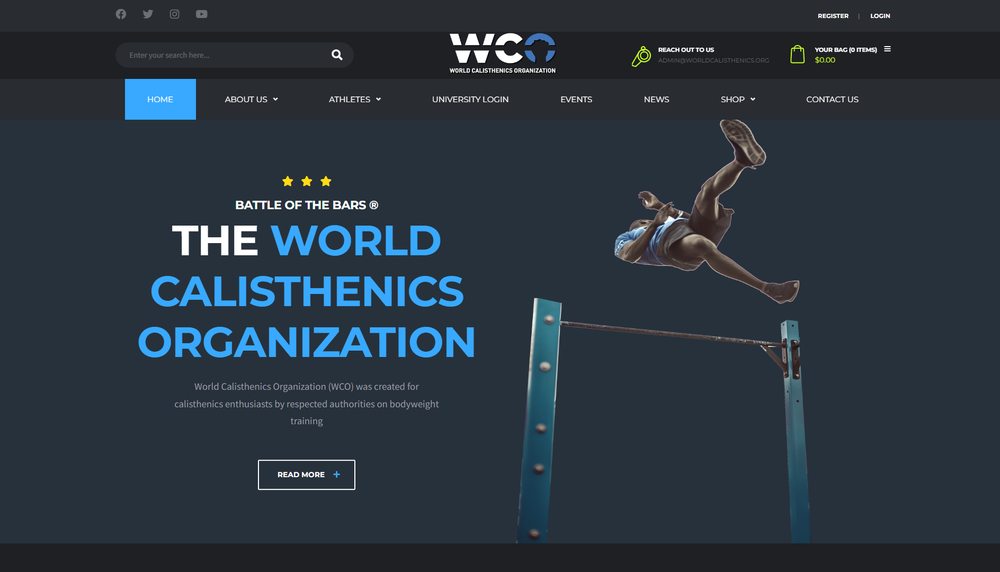
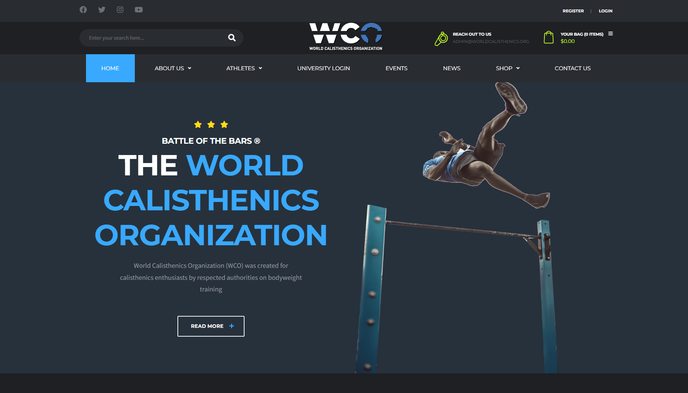

Calisthenics Community and Competitions: Connect and Compete
Calisthenics has grown not just as a form of physical exercise, but as a vibrant community of enthusiasts and athletes who share a passion for bodyweight training. From local park meet-ups to global competitions, the calisthenics community offers a supportive environment where individuals can learn, grow, and challenge themselves.
Building Connections Through Community
The foundation of the calisthenics community is built on the shared experiences of its members, who often gather in parks, gyms, and fitness events. These gatherings are not only a place to train but also to exchange knowledge and support each other's progress. Websites like Global Bodyweight Training offer resources and forums where newcomers can connect with seasoned practitioners, find training tips, and discuss various aspects of fitness.
Spotlight on Competitions
For those looking to test their skills, calisthenics competitions provide a platform to compete against some of the best athletes in the sport. These events often feature categories like freestyle routines, which showcase creativity and strength, and static holds, which test endurance and control.
One major competition platform is World Calisthenics Organization (WCO), which hosts the renowned Battle of the Bars. The WCO's website offers details on upcoming events, registration information, and past competition highlights, making it a central hub for competitive calisthenics worldwide.
Competitive Platforms and Recognition
Online platforms like Thenx provide athletes with opportunities to participate in virtual challenges and competitions, making it accessible for people from all over the world to engage and compete from their local environments. These platforms often offer rankings and awards, giving further recognition to the athletes and fostering a sense of achievement and motivation among participants.
Local competitions, such as those held at community fitness events or through gym networks, also play a crucial role in nurturing the competitive spirit within the community. They provide a stepping stone for many who are new to competing in front of an audience and serve as excellent preparation for larger, more formal events.
Joining the Movement
Whether you're new to calisthenics or an experienced athlete, joining the community can significantly enhance your training experience. Engaging with others who share your interests not only helps in improving your skills but also keeps you motivated and inspired. Check out local clubs, online forums, and social media groups to start connecting with other calisthenics enthusiasts today.
In conclusion, the calisthenics community and competitions offer a unique blend of fitness, artistry, and camaraderie. By participating in these activities, individuals can enhance their skills, connect with others, and contribute to the growth and recognition of calisthenics as a respected and celebrated sport.